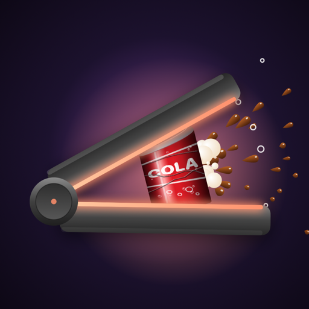

Crush Duo
Close it. Crush it.
Crush things with your iPhone Duo
Put a potato chip, a hazelnut, an egg or a cola can between the two halves of your iPhone Duo and close it. You feel it push back as the phone closes, then it gives way with a crunchy sound, and the pieces splash across the front screen. Bigger objects push back harder. No ads: new objects are unlocked with in-app purchases.
Support
Questions or problems? Write to giovanni.ioime.1996@gmail.com.
Schiaccia le cose con il tuo iPhone Duo
Metti una patatina, una nocciola, un uovo o una lattina tra le due metà del tuo iPhone Duo e chiudilo. Mentre chiudi senti l'oggetto resistere, poi cede con un crunch e i pezzi schizzano sullo schermo esterno. Più l'oggetto è grande, più resiste. Niente pubblicità: i nuovi oggetti si sbloccano con gli acquisti in-app.
Supporto
Domande o problemi? Scrivi a giovanni.ioime.1996@gmail.com.